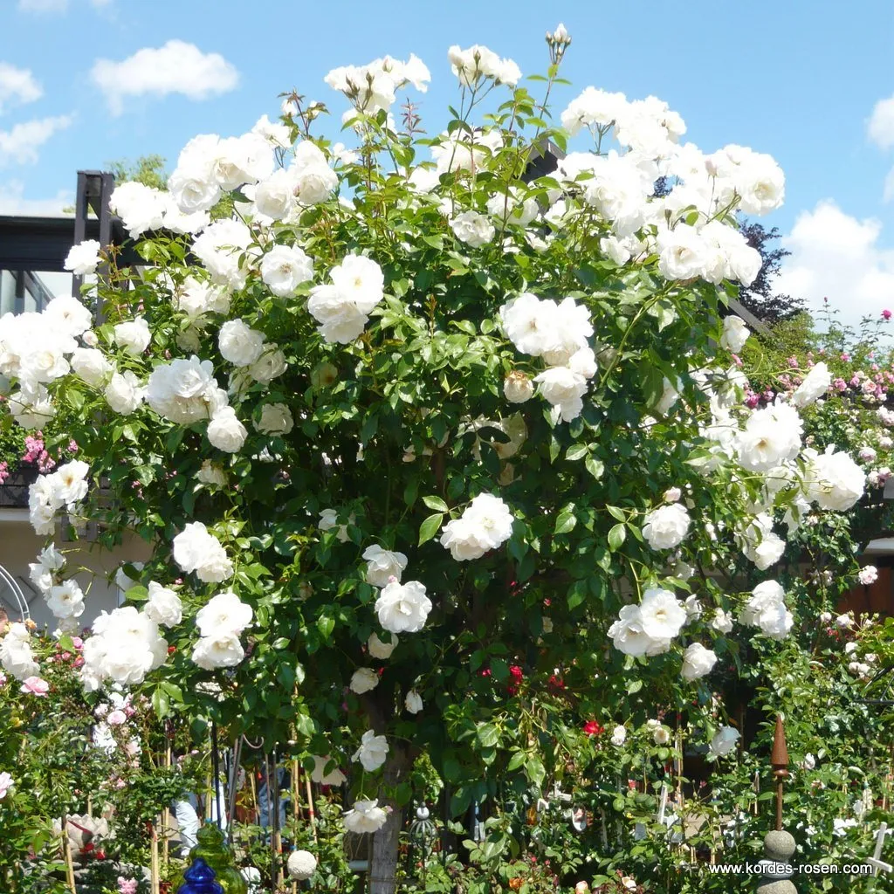
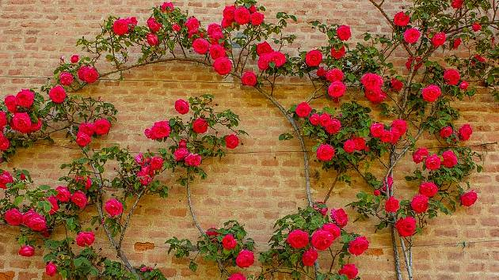
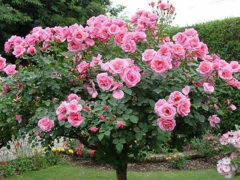

|
 |
Standardně všechny růže rostou v keři, ale ty, které jsou přímo keřové, se vyznačují mohutnějším růstem. Většinou dorůstají do výšky 120 - 150 cm, při velmi optimálních podmínkách mohou dosáhnout k 2 m. Můžeme je najít též pod přívlastkem sadové či parkové. Ozdobí nám předzahrádky, nádoby, záhony, ale vyniknou i ve formě solitéry. |
|
 |
Toužíte po popínavé růži? Pak mějte na paměti, že budete potřebovat podpěrnou konstrukci. Popínavé růže nemají žádné přísavky či úponky. Chcete-li zakrýt nevzhlednou zídku, ozvláštnit si vstupní branku nebo si vytvořit na zahradě romantické zákoutí, pak jsou pro Vás růže v této kategorii jasnou volbou. |
|  |
Stromkové růže se mohou stát dominantou záhonu nebo velmi vzhlednou solitérou. Působí velmi dekorativně, tvoří totiž obrovskou kytici, která je plná nadýchaných květů. Rostou kompaktně, hustě a některé kultivary tvoří převis. S úspěchem se dají pěstovat i v nádobách. |